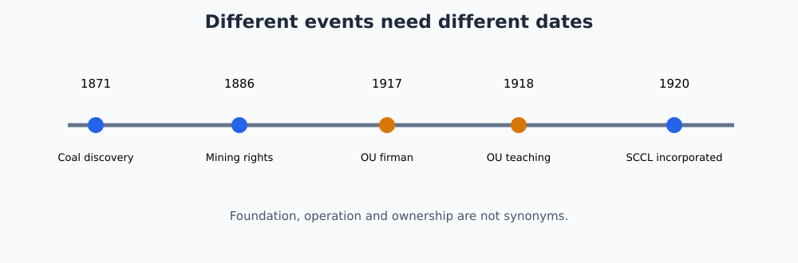
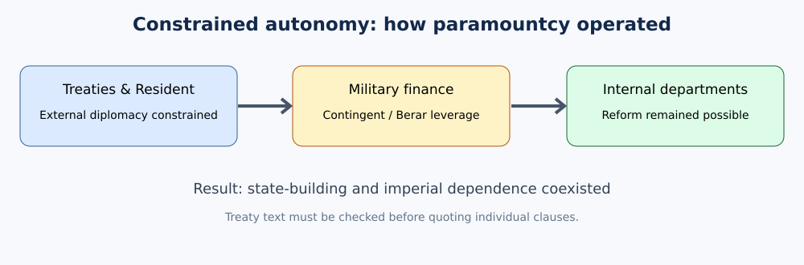
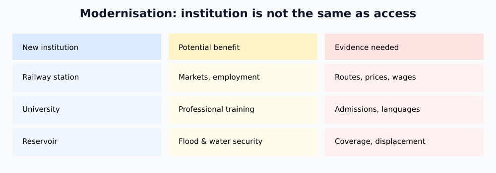

Original practice only. NOT academically approved.
Cycle86 integrated editable student master — original practice only; NOT academically approved.
The 2024 Group-I Notification 02/2024 Annexure-II Paper II, Section II, Item 3 is reproduced in a publicly accessible notification mirror. It lists Asaf Jahi establishment, Salar Jung reforms, land tenures, jagirdars/deshmukhs, vetti, British paramountcy, 1857/Turre Baz Khan, later Nizam infrastructure and monuments. The commission-hosted original was not directly reauthenticated in this cycle; R1 remains IN_PROGRESS.
The Asaf Jahi period connects eighteenth-century Deccan state formation with the social, economic and institutional conditions that shaped twentieth-century Telangana. A good examination answer must avoid two opposite simplifications. Hyderabad State was neither an entirely independent modern nation-state nor merely a district directly governed by the British. The Nizam retained an internal court, revenue system, army, bureaucracy and princely sovereignty, while British military and diplomatic power increasingly constrained external affairs and strategic choices. The region that became Telangana formed the Telugu-speaking core of a much larger Hyderabad State that also included Marathi- and Kannada-speaking areas. Consequently, statistics or institutions described for Hyderabad State as a whole should not automatically be presented as if they applied uniformly to every Telangana district. The period also requires social history: jagirdars, deshmukhs, village officials, cultivators, artisans, labourers, Dalit communities, Adivasis, merchants and new educated groups experienced state policies in very unequal ways.
Additional source-critical interpretation.
Hyderabad State included Telugu-, Marathi- and Kannada-speaking regions; the Telangana of today's state boundaries is not identical to the princely state of the nineteenth century. A Hyderabad State figure for revenue, population or schooling cannot be labelled a Telangana figure without district disaggregation. Even within Telugu-speaking districts, Hyderabad city, mining belts and agrarian interiors had different opportunities and constraints. This matters when comparing railway access, schooling, industrial employment and forms of land tenure.
The 2010 Committee for Consultations on the Situation in Andhra Pradesh report, hosted by India's Ministry of Home Affairs, describes Osmania University's early Urdu-medium system and the concentration of higher education in Hyderabad city, with limited provision outside it. That later report is retrospective evidence, not a nineteenth-century primary document. It is useful for framing an institutional disparity but should be triangulated with historical education reports. A precise mains answer states the geographical unit before interpreting any statistic. It then distinguishes an achievement of the princely government from the extent to which residents of rural Telangana actually benefited.
Mir Qamar-ud-din Khan, later known by the title Nizam-ul-Mulk and Asaf Jah I, emerged from the Mughal imperial elite. He served as viceroy of the Deccan and returned south as Mughal central authority weakened. His victory over Mubariz Khan at Shakar Kheda in 1724 is conventionally treated as the decisive moment in the establishment of autonomous Asaf Jahi rule. Yet the first Nizam did not formally declare a modern-style sovereign republic or erase Mughal legitimacy overnight; political authority was negotiated through imperial titles, military control, revenue assignments and regional alliances. The new order inherited Mughal administrative practices while adapting them to Deccan conditions. After Asaf Jah I died in 1748, succession struggles drew in Maratha power, the French and the English East India Company, illustrating how Hyderabad politics became entangled with the wider eighteenth-century contest for the Deccan.
Additional source-critical interpretation.
Mir Qamar-ud-din Khan's defeat of Mubariz Khan at Shakar Kheda in 1724 is a useful chronological anchor, but the event should not be mistaken for a declaration of complete independence in the twentieth-century sense. Asaf Jah I had acquired authority through Mughal offices and continued to use imperial idioms of legitimacy. The key change was effective command over revenue, military appointments and regional alliances as Delhi's ability to enforce orders weakened.
In the Deccan, autonomy was negotiated rather than simply announced. Maratha claims, regional noble houses, merchant finance and competing military forces shaped what the Nizam could actually collect and govern. The succession conflicts after Asaf Jah I's death in 1748 show the fragility of an order organised around a powerful individual. French and English companies supported rival factions, but Indian contenders actively sought those alliances. A mains answer should distinguish the date of a decisive victory, the continued use of Mughal legitimacy, and the much longer process of institutional consolidation. This prevents a neat but false narrative in which Hyderabad instantly became either fully independent or immediately subordinate to Britain.
The decades after 1748 saw competing claimants such as Nasir Jang, Muzaffar Jang and Salabat Jang, with French and British companies supporting rival factions. This was not simply European interference imposed on passive Indian courts: Indian rulers and nobles actively used European-trained troops and alliances to pursue their own claims. Nizam Ali Khan, later Asaf Jah II, ultimately consolidated control and shifted the political center decisively toward Hyderabad in the 1760s. The state nevertheless faced powerful neighbors, especially the Marathas and Mysore, and growing East India Company influence. Territorial concessions and military agreements reduced the Nizam's strategic autonomy over time. The correct analytical frame is therefore progressive dependency: Hyderabad retained extensive internal rule while its ability to conduct independent military and foreign policy narrowed.
Additional analytical explanation.
Chronology and agency. The succession crisis cannot be explained solely as a rivalry between two European trading companies. Hyderabad nobles controlled troops, court appointments, revenue interests and access to the Nizam's legitimacy; European officers supplied military resources that local factions sought to use. A treaty or diplomatic dispatch can establish that a European power recognized a claimant, but it does not alone establish the claimant's ability to collect revenue in distant districts. Students should distinguish nominal investiture, effective control, and retrospective dynastic narrative. A contemporary letter may show an intended alliance rather than a completed transfer of power. This distinction matters in the period between Asaf Jah I's death in 1748 and the later consolidation of Nizam Ali Khan. It also helps explain why the political geography of the Deccan shifted without a single clean moment of state formation. In a mains answer, build a sequence: succession competition; local noble alliances; European military participation; the strengthening of a particular claimant; and the enduring financial cost of dependency. Avoid treating French and British influence as identical across the whole period. No single dated battle should be presented as proof that all districts immediately accepted the victor's administration.
British paramountcy was an unequal political relationship rather than direct provincial administration. Treaties bound Hyderabad to the Company and later the British Crown, while a Resident stationed at Hyderabad became a powerful channel of influence. Under the subsidiary alliance system associated with Governor-General Richard Wellesley, the Nizam accepted British troops and restrictions on relations with other powers. Agreements of 1798 and 1800 deepened this arrangement. Financial obligations, military dependence and the presence of the Residency constrained sovereignty. Yet the Nizam's government continued to legislate and administer large areas internally. This duality explains why Hyderabad had its own currency arrangements, railways, administrative departments and educational policies while remaining unable to pursue an independent external strategy comparable to a fully sovereign state.
Additional source-critical interpretation.
British paramountcy over Hyderabad did not arise from one timeless treaty clause. Agreements in the late eighteenth and early nineteenth centuries altered military obligations, diplomatic freedom and fiscal arrangements. The 1798 and 1800 subsidiary-alliance settlements belong to a different stage from the 1853 Berar arrangement. The British Resident was influential because the Nizam's government increasingly depended on a military and diplomatic framework it could not independently control. Yet internal administration remained extensive.
The British Library's India Office Records catalogue identifies a 33-page file, IOR/L/PS/18/D8, containing treaties with Hyderabad extracted from Aitchison's collection for 1759–1861. The catalogue establishes that the archival source exists; it does not establish that every clause has been read in this production. Aitchison's 1864 fifth volume is also indexed by a Government of Maharashtra-supported digital collection. Until treaty text is checked directly, quote no invented clauses. Analyse the causal mechanism instead: external military dependence created fiscal obligations; fiscal disputes increased leverage over territories and policy; internal departments could nevertheless develop under the Nizam. This is constrained sovereignty, not straightforward annexation.
Military dependency had fiscal consequences. The Hyderabad Contingent evolved as a force maintained for the security of the princely state but controlled within the British imperial military framework. Arrears and disputes over the cost of the contingent contributed to the 1853 assignment of Berar and certain other districts to British management. Later agreements altered the arrangement, while the Nizam retained a formal sovereign claim over Berar for a period even as British administration became entrenched. For mains writing, the significance is more important than memorizing every treaty clause: British power could convert military obligations into territorial and fiscal leverage without annexing the entire princely state. This demonstrates how paramountcy operated through finance, diplomacy and military institutions together.
Additional source-critical interpretation.
The Berar question illustrates why historians must separate legal title, revenue control and day-to-day administration. Financial obligations associated with the Hyderabad Contingent contributed to the 1853 assignment of Berar and other districts to British management. A later arrangement did not simply turn the entire Hyderabad State into a British province. The Nizam's continuing formal claims and British administrative control could coexist in different combinations over time.
Students sometimes memorise the phrase “cession of Berar” and then infer that sovereignty, ownership, fiscal rights and administration all transferred identically. That inference is unsafe. A better answer identifies the military cost that triggered the arrangement, the administrative powers exercised by the British and the distinction between Berar's history and that of Telugu-speaking Telangana districts. A map of Hyderabad at one date should not be used as evidence of its exact borders at another. In a source audit, treaty schedules and contemporaneous administrative maps are necessary before presenting precise territorial acreages. The larger lesson is that imperial power could operate through budgetary dependency as effectively as through open conquest.
Evidence test. A useful archival question is whether a Berar agreement transferred ownership, day-to-day administration or only revenue management. Those are different legal consequences. Compare the operative clauses of successive agreements with maps and revenue returns rather than relying on a single modern label such as 'cession'. In a mains answer, specify the date, the obligation being settled, the party controlling collection and the Nizam's residual claim. Until the actual instrument is inspected, the safest conclusion concerns British fiscal leverage, not an unqualified claim of permanent annexation.
Hyderabad's administration combined courtly offices, revenue assignments, hereditary local intermediaries and personal networks. Authority was uneven across diwani or khalsa areas directly administered for the state, jagir territories assigned to nobles or other beneficiaries, and the Nizam's private Sarf-e-Khas domain. These categories changed over time and cannot be reduced to a single permanent percentage. At district and village levels, officials and intermediaries such as deshmukhs, deshpandes, patels and patwaris exercised substantial influence. Revenue rights could overlap with social dominance, credit relations and control over land. The resulting system was not simply feudal in one uniform sense; the legal basis, size and degree of control of different estates varied. Still, concentration of power in landed and official elites created conditions for exploitation that later became central to agrarian protest.
Additional source-critical interpretation.
In many rural settings the state demand, jagir privileges, hereditary revenue offices, landholding, moneylending and social rank overlapped. Khalsa or diwani lands under more direct administration should be distinguished from jagir assignments and the Nizam's Sarf-e-Khas domain. These categories changed over time and did not produce a uniform village experience. A jagirdar's rights could differ from those of a deshmukh who had acquired land and local influence through revenue service, credit and patronage. Patels and patwaris held village-level functions that affected measurement and records.
Consider a hypothetical cultivator disputing the entry for a tenancy plot. The record might be controlled by an official linked to a powerful household; the same household might also be a lender or employer. Even if the legal appeal was nominally available, the risk of losing credit or work could deter complaint. This is why administrative reform and social justice are analytically distinct. Reorganisation of departments might improve revenue regularity without removing local intimidation. The answer should identify specific mechanisms of dependence, not label every landholder identically “feudal.” A precise account compares formal entitlement, actual control of land, coercive capacity and avenues of redress.
A jagir was broadly a revenue assignment or estate held under specified obligations and privileges, while jagirdars ranged from major nobles to smaller beneficiaries. Deshmukhs historically served as regional revenue intermediaries and in Telangana some families accumulated substantial land, political authority and influence over village institutions. Their local power could persist even when formal administrative functions changed. Cultivators confronted not only the state demand but also rent, cesses, debts and customary exactions. Large landholders could exercise economic and coercive power through control over land, employment and local offices. An analytical answer should distinguish legally defined tenure from lived social dominance: a deshmukh's influence might derive from a combination of office, ownership, credit and political connections rather than one single legal title.
Additional analytical explanation.
Rights and everyday power. A jagirdar's assigned revenue claim and a deshmukh's locally accumulated authority may overlap in one household, but the words do not mean the same thing. An estate-holder might collect rent, control employment, extend credit, and influence a patel or patwari; each mechanism needs separate documentary evidence. A revenue register can identify a legally recorded demand while a petition or oral testimony may reveal additional forced labour, gifts, transport services or intimidation. The fact that a household paid an official assessment does not exclude private extraction. Conversely, the presence of a jagir is not proof that every cultivator was subjected to identical exactions. For Telangana, this analytical distinction explains why later agrarian mobilization targeted combinations of land concentration, official power and caste hierarchy. In exam answers use the headings tenure category, local intermediary, forms of extraction, social distribution, and political consequence. The evidentiary limit is important: without district- and village-level material, one cannot assign the same numerical incidence of rent, debt or vetti to every part of Hyderabad State.
Comparative illustration. Imagine two villages: in one, a hereditary intermediary collects rent and supplies credit; in another, a noble holds a formal revenue assignment but delegates daily management. Both could display exploitation, but their institutional mechanisms differ. A historian would inspect settlement records, petitions and village testimony before applying a common label. The example is analytical, not a claim about two identified villages. It shows why precise distinctions between land rights, office, social dominance and coercion strengthen an exam answer.
Vetti refers to forms of compulsory or unpaid labour imposed on subordinate households, particularly in rural society. It could include personal service, agricultural work, carrying loads, supplying materials or performing tasks for officials and dominant landholders without normal remuneration. The burden was shaped by caste, class, gender and local power. Dalit and other marginalized communities were especially vulnerable to hereditary or customary service demands. Vetti should not be described merely as a tax: its social meaning lay in coercive labour and status subordination. Nor should historians assume a single identical practice in every village. The persistence of vetti became one of the symbols of oppressive agrarian relations attacked by social reformers, political organizers and later peasant movements.
Additional source-critical interpretation.
Vetti was more than unpaid work measured in hours. Its defining feature was an obligation imposed through unequal power where refusal could invite punishment, loss of access to land, debt pressure or social exclusion. Demands might involve agricultural work, household service, carrying goods or duties for local officials. The burden was not uniform across communities, but caste and landlessness often made subordinated groups especially vulnerable. The opportunity cost was substantial: days spent in compulsory service were days not spent earning wages or cultivating one's own field.
The practice also reproduced social hierarchy by publicly demonstrating who could command another person's labour. A narrow revenue-history account misses this humiliation and gendered vulnerability. Yet a responsible historical account should not assert that every household in every Telangana village performed identical duties. Local petitions, village-level evidence and oral histories require triangulation. In a mains answer, connect vetti to land dependence, record control and political mobilisation, then distinguish abolition as a legal principle from actual enforcement. The agrarian protests of the twentieth century challenged an intertwined system of land, labour, coercion and status rather than a single isolated tax.
Mir Turab Ali Khan, Salar Jung I, served as Diwan from 1853 until 1883 and is associated with a major phase of administrative restructuring. The reforms aimed to strengthen revenue collection, rationalize departments, discipline expenditure and make government more predictable. They were also responses to fiscal weakness and the pressure of British power. Centralization involved the creation or reorganization of departments concerned with revenue, justice, police, public works, education, communications and records. Reform therefore had a double character: it could improve bureaucratic capacity while also making extraction and surveillance more effective. A high-quality answer does not treat modernization as synonymous with democratization. More regular government could coexist with autocratic rule and unequal agrarian relations.
Additional source-critical interpretation.
Salar Jung I served as Diwan from 1853 to 1883. The reform problem he inherited involved fragmented revenue authority, weak coordination across departments, fiscal stress and the pressure of British paramountcy. Reorganised district administration, more systematic accounts, judicial and police arrangements, public works and communications aimed to make rule more predictable and fiscally sustainable. These initiatives should be analysed as a connected programme: better records support assessment, regular accounts support budgeting, and transport enables officers and goods to move.
A reforming state, however, is not automatically a democratic or egalitarian state. Centralisation could reduce arbitrary interference from one set of courtiers while strengthening extraction from cultivators. New offices could create opportunities for educated employees without equal access for women, Dalits or remote villages. To evaluate Salar Jung, compare three outputs: administrative regularity, material infrastructure and the distribution of rights. Do not credit him personally with every institution founded decades after his death. Distinguish his tenure from the sixth Nizam's later reign and the seventh Nizam's twentieth-century projects. Chronological discipline prevents a list of achievements from becoming a false causal explanation.
Reform test. To evaluate Salar Jung I, use a before-and-after institutional question: were revenue accounts more regular, did a district officer's authority become better defined, and could a cultivator challenge a demand? A law creating a department answers only the first part of an implementation inquiry. The next question is who had practical access to that department. Distinguish the expansion of state capacity from evidence of redistribution; they can move in different directions. The original annual departmental returns have not been fully inspected here.
Salar Jung's administration sought clearer territorial divisions and more regular revenue machinery. District administration was reorganized and officials made more accountable to central departments. Measures were taken to reduce some farming of revenue and to regularize assessment and collection. Judicial institutions were separated more clearly from purely executive functions, though access to justice remained uneven and the system evolved over decades rather than in one decree. Police and court reforms likewise attempted to replace fragmented authority with more standardized procedures. The larger historical significance is institutionalization: offices increasingly belonged to a bureaucratic structure rather than functioning solely as extensions of individual nobles. But formal rules did not automatically eliminate corruption, elite privilege or local coercion.
Additional analytical explanation.
Administrative causation. Revenue and judicial reform were linked because more regular fiscal records made disputes more visible and increased the importance of institutions empowered to adjudicate them. Yet a new department's formal establishment should not be confused with the availability of a functioning office in every village. A rulebook may prescribe an appeal, while distance, language, cost and the local dominance of an intermediary could prevent a cultivator from using it. Evaluate the reforms at three levels: the legal design of offices and powers; the implementation capacity of personnel, records and communications; and the social accessibility of services. A dated administrative report may demonstrate new budget headings or staffing, but not automatically a fall in coercion. The relevant comparison is not simply 'traditional' versus 'modern': the new bureaucracy could both restrain arbitrary demands and improve the state's ability to collect taxes. This ambiguity should appear in mains conclusions. Until original Salar Jung-era departmental reports and district returns are inspected, numerical claims about uniform efficiency gains remain unverified.
Exam comparison. Suppose a district report announces a new court and standardized records. That supports the existence of a formal administrative reform, not a conclusion that caste or class inequality disappeared. Ask whether appeal costs fell, whether cases from rural districts were heard and whether the same local intermediaries still controlled documentation. These questions turn a chronological list of reforms into a causal assessment. Avoid inventing exact staffing, budget or case-disposal numbers where the archival returns are unavailable.
Roads, postal arrangements, telegraph links and public works helped the government communicate across a geographically large princely state. Better connectivity served commercial and civilian uses, but it also strengthened military movement, taxation and administrative supervision. Public works included roads, government buildings, water systems and later large irrigation projects. Such infrastructure should be analyzed by asking who financed it, which regions benefited, and whether access was equitable. The spread of communication also enabled newspapers, associations and political debate, meaning that technologies designed partly to strengthen the state could eventually help subjects organize and criticize it.
Additional analytical explanation.
Infrastructure as state capacity. Roads, post and telegraph should be treated as complementary networks with different users and costs. A metalled road could facilitate official inspection and commercial transport; a telegraph line could accelerate a court's decisions or military communications; a postal system could connect educated urban households. Their existence does not prove equal access for women, landless labourers or remote Adivasi settlements. For a source-based comparison, identify the date a route was sanctioned, when it opened, the volume of traffic it carried and who could afford to use it. Maps may show connectivity but not affordability. The Nizam's government could therefore modernize administration while local coercion survived. Infrastructure could strengthen revenue collection as well as trade. An exam answer should trace a mechanism rather than list monuments: investment → administrative reach and market integration → unequal distribution of costs and benefits. The stronger historical claim requires route-specific traffic and expenditure returns; this chapter does not pretend those returns have been consulted.
Analytical mechanism. Roads, post and telegraph reduced certain communication delays, but different networks served different tasks. A telegraph could transmit a military or official instruction faster than a postal letter, while a road could enable physical delivery of produce or court documents. The welfare effect depended on cost and reach. Compare sanction date, completion date and actual use when possible. No single network's opening proves equal integration of every Telangana village; this requires district maps and user data.
The uprising of 1857 affected Hyderabad differently from north Indian centers where Company rule collapsed temporarily. Nizam Afzal-ud-Daula and his influential Diwan Salar Jung I supported the British political order, a decision shaped by the princely state's strategic dependence and fear of instability. Nevertheless, anti-British sentiment existed among sections of soldiers, religious leaders and townspeople. Hyderabad therefore cannot be described as either completely loyal or uniformly rebellious. Its experience reveals the fragmented political geography of 1857: princely governments could cooperate with the British even while local groups attempted armed resistance.
Additional analytical explanation.
Why 1857 needs a two-level narrative. The Hyderabad court's diplomatic position and the actions of dissenting groups were not identical. A ruler could choose alliance with the British while soldiers, religious figures or local activists expressed anti-British anger. A study of the Revolt of 1857 must therefore distinguish state policy, military events, and popular memory. The Residency attack belongs to the military-event level; it should not be described as a successful takeover of Hyderabad State. Its importance is not proportional only to territorial success: it demonstrates the limits of using a ruler's official policy as a proxy for all the population's political loyalties. The date 17 July 1857 is widely used in the existing chapter, but casualty figures, exact force size and individual later movements require contemporary records before they are used as settled exam facts. For a balanced mains answer, introduce the subsidiary alliance background, state the court's alignment, describe the Residency episode, and assess its symbolic importance without inflating its geographic scale.
Historical scale. Three distinct claims are often confused: the Nizam's government supported the British, an anti-British attack occurred in Hyderabad, and the entire state revolted. The first two can coexist; the third requires far broader evidence and is not established by the Residency episode. In mains answers distinguish the court's policy from the agency of local participants. Use the episode to challenge a simplistic account of princely-state loyalty without exaggerating the outcome or inventing casualty statistics.
On 17 July 1857, an armed group led prominently by Turre Baz Khan and Maulvi Alauddin attacked the British Residency at Hyderabad. The attack failed against the defended Residency, but it became an important episode in Telangana's memory of resistance. Turre Baz Khan was captured, later escaped custody, and was subsequently killed by forces pursuing him. The event has symbolic importance because it challenges a court-centered narrative in which the Nizam's alliance with the British is treated as the only Hyderabad response to 1857. At the same time, a historian should avoid exaggerating the scale of the attack into a successful state-wide insurrection. Its significance lies in the presence of organized anti-British resistance within a princely state whose government remained allied to Britain.
Additional source-critical interpretation.
Hyderabad's response to the uprising of 1857 reveals competing political positions within one princely state. The Nizam's government and Salar Jung I aligned with British power, while an armed group associated with Turre Baz Khan and Maulvi Alauddin attacked the British Residency on 17 July. The attack did not overturn the state government or produce a generalised takeover of Telangana. It nonetheless demonstrated that official diplomatic loyalty was not synonymous with unanimous popular acceptance of British rule.
Different evidence genres must be kept separate. A Residency dispatch might emphasise security threats; a later nationalist biography might highlight sacrifice; a local memorial might communicate public memory rather than a contemporaneous operational account. Without a certified original police file or dispatch, do not invent precise numbers of fighters, casualties, weapons or quotations. A nuanced exam answer explains the constraints on the Nizam's court, the motivations of dissenting groups, the limited immediate outcome and the later symbolic importance of Turre Baz Khan. The episode also exposes the danger of projecting a single all-India model of 1857 onto diverse princely-state settings.
Mir Mahbub Ali Khan, the sixth Nizam, succeeded as a child in 1869, so a regency initially operated around the young ruler. His reign witnessed further bureaucratic consolidation, rail expansion, new educational institutions, urban improvements and changing relations between court elites and an emerging professional class. The late nineteenth century also exposed the limits of development: rural inequality remained severe, jagirdari power persisted, and modern institutions were concentrated disproportionately in urban centers. Hyderabad city's growth should therefore not be generalized to all Telangana villages. Mahbub Ali Khan's reign is best understood as an era in which older aristocratic structures coexisted with new departments, transport systems and professions.
Additional source-critical interpretation.
Mir Mahbub Ali Khan, the sixth Nizam, and Mir Osman Ali Khan, the seventh, governed during different phases of administrative and technological change. The sixth Nizam's reign was associated with the consolidation of railway connections, urban institutions and professional administration. The seventh Nizam's reign saw major initiatives in higher education, water supply, flood mitigation, hospitals, industry and public architecture. Some projects originated in one period and matured in another; institutional chronology therefore matters more than attaching everything to one ruler.
Osmania University provides a useful warning. Its official history dates the founding firman to 26 April 1917, while the university's own milestones identify the launch of colleges in 1918. These dates describe different events and should not be treated as contradictory. Similarly, a public works project may have been proposed, financed, constructed and inaugurated in different years. For any achievement, identify which milestone is being dated. The social assessment must then ask who gained access: Hyderabad city's new middle classes, Urdu-literate students, industrial workers, rural tenants and women did not necessarily experience the same benefits.
Reign-specific evaluation. Mahbub Ali Khan's reign began in 1869, while Osman Ali Khan succeeded in 1911. Infrastructure initiated during the former reign may have been completed, expanded or repurposed during the latter. The 1908 Musi flood belongs chronologically to the sixth Nizam's reign, whereas major reservoir development belongs to subsequent programmes. This illustrates why a project should be dated by planning, sanction, construction and operation separately, rather than assigned wholesale to one ruler.
Railways became one of the most visible signs of technological modernization. The Wadi-Secunderabad line opened in 1874, connecting Hyderabad State with wider railway networks. The Nizam's Guaranteed State Railway expanded subsequently, while the Hyderabad-Godavari Valley Railway connected additional regions. Rail transport lowered travel time, supported the movement of cotton, grain, coal and other commodities, and integrated Hyderabad more closely with British Indian markets. Secunderabad's cantonment and railway functions reinforced its importance as a twin urban center. Yet railway benefits were uneven: a line designed around strategic and commercial priorities did not automatically improve poor cultivators' purchasing power or eliminate famine vulnerability.
Additional source-critical interpretation.
The Wadi–Secunderabad railway connection, conventionally dated to 1874, linked Hyderabad more closely to wider railway networks. Railways moved troops, coal, cotton, grain, officials and passengers; their significance was not merely technological. State guarantees and financing arrangements distributed risk among the Hyderabad government, private investors and imperial institutions. To judge their economic effect, a historian must ask which commodities moved, who paid freight, which markets gained access and whether remote villages received feeder roads.
The arrival of a railway station could raise demand for nearby land and facilitate trade while bypassing communities distant from the line. Railways also made coal mining more commercially viable, especially in the Yellandu–Singareni region. The railway and mining histories therefore intersect. Avoid claiming that every railway automatically reduced famine or improved peasant welfare: transport capacity does not guarantee equitable purchasing power or relief policy. A sound answer combines a map of routes with evidence of tariffs, freight, regional markets and employment. The published date of a line's opening should be distinguished from the year construction began or a guarantee agreement was signed.
Railway evidence. The Wadi–Secunderabad link is conventionally associated with 1874, but a route opening is only the beginning of economic analysis. To claim that the railway transformed a particular district, examine freight movement, passenger access, commodity prices and branch-line connections. The guaranteed-finance arrangements also raise a fiscal question: who bore risk if revenues disappointed? Avoid presenting network mileage as a direct measure of household prosperity, especially for villages without stations.
Postal and telegraph systems created new possibilities for state administration, merchants, newspapers and private correspondence. Roads linked district headquarters with markets and railheads, while horse, cart and later motor transport altered urban mobility. These networks helped central departments issue orders rapidly and gather information from districts. They also widened the circulation of reformist and nationalist ideas. Communications thus had a politically contradictory character: they increased the capacity of an autocratic state while simultaneously enabling a more connected public sphere. In examination answers, this dual use of infrastructure is a useful analytical point.
Additional analytical explanation.
A network is not a welfare measure. A new road or telegraph connection is a physical asset; an improvement in living standards is an outcome that needs additional evidence. The two can be related but should not be equated. Railway and telegraph development could lower information and transport costs for merchants, officials and selected producers while other communities remained outside the network. In rural Telangana, seasonal road conditions, market intermediaries and the ability to finance journeys all mattered. The strongest evaluation would compare district-level route maps with freight rates, market prices, passenger access and household income; such a dataset is not presented here. The political effect also cuts both ways. Faster communication enabled administrative coordination and disaster response, but it could improve surveillance and coercive revenue enforcement. Avoid writing that every road was a benevolent reform or that every investment was merely extractive. Explain who paid, who governed, who used the network and how the benefits varied by location and social position.
Distribution test. A rural cultivator may have gained market access through a road yet remained dependent on a moneylender to transport produce. A city official may have benefited from faster telegraph instructions while a distant hamlet lacked any local service. These examples illustrate why connectivity and equitable access are separate variables. The appropriate evidence would be route maps, tariffs, transport costs and district-level usage, none of which should be replaced with a blanket assertion of universal improvement.
Mir Osman Ali Khan inherited a state with expanding bureaucracy, railways and educational institutions but deep social inequality. His reign saw ambitious public institutions, major reservoirs, hospitals, colleges and industrial ventures. Hyderabad developed a distinctive modern administrative identity and a growing professional middle class. At the same time, political power remained concentrated in the ruler and elite institutions; representative government developed slowly, and agrarian domination continued in many Telangana districts. The same reign therefore produced both internationally recognizable public architecture and conditions that fed social movements. Mains answers should hold these realities together rather than choosing a wholly celebratory or wholly stagnant picture.
Additional analytical explanation.
Periodisation matters. Mir Osman Ali Khan's reign began in 1911 and ended with the integration of Hyderabad into the Indian Union in 1948. The institutions associated with his reign emerged at different times and from different administrative initiatives; it is misleading to attribute every project to a single royal decision. The 1908 Musi flood, for instance, predates his accession, whereas the major reservoir programme developed subsequently. Osmania University's founding initiative and later teaching activity also require separate dates. The state's internal investment in education, industry and waterworks coexisted with the constraints of paramountcy and continued agrarian inequality. A historically defensible evaluation asks whether a policy strengthened the capital, improved statewide provision, or changed access for disadvantaged rural households. The first two may be established from institutional histories and construction records; the third needs enrolment, employment, caste, gender and district evidence. This distinction prevents the exam answer from becoming either unqualified praise or a blanket dismissal of twentieth-century state-building.
Chronological safeguard. Osman Ali Khan's period included changes in education, water supply and industry, but the Musi disaster occurred in 1908 before his accession. A good answer should therefore say that later reforms responded to inherited problems as well as new policy choices. The distinction between a ruler's initiative, a minister's administrative implementation and a project's actual beneficiaries also matters. Institutional histories establish important dates; they do not prove that every rural household experienced the same gains.
The catastrophic Musi flood of 1908 highlighted Hyderabad city's vulnerability and influenced later flood-control and water-supply planning. Engineer M. Visvesvaraya advised on measures after the disaster. Osman Sagar and Himayat Sagar were developed in the Musi river basin in the early twentieth century, strengthening water supply and flood moderation for Hyderabad; source descriptions differ on exact completion milestones and tributary labels. These projects show how environmental disaster could trigger technocratic planning. Yet they belong to urban and regional water history, not proof that rural irrigation problems throughout Telangana were solved. Distinguish municipal water-security infrastructure from village tanks and large agricultural irrigation schemes.
Additional source-critical interpretation.
The catastrophic Musi flood of 1908 made flood control and drinking-water provision urgent problems for Hyderabad city. The Telangana government's Ranga Reddy district page dates the creation of Osman Sagar, by damming the Musi, to 1920. The state's Musi Riverfront Development Corporation describes Osman Sagar and Himayat Sagar as reservoirs constructed during the Nizam period after the flood, while warning that their catchments now face degradation and encroachment. These official records establish the broad chronology and continued relevance of the infrastructure.
An urban history should go beyond celebrating engineering. Reservoirs required land, changed water flows, and could alter access for downstream users. Flood-control infrastructure might reduce one kind of risk while concentrating planning benefits in the city. A proper evaluation distinguishes design purpose, observed performance, maintenance and the social costs of construction. Modern catchment problems should not be retroactively presented as measured conditions in 1920. Use the flood-to-reservoir sequence as an example of a disaster reshaping public administration, then consider why preventive planning and equitable service distribution remain separate tests of effective governance.
Date and river-name caution (source-checked 29 October 2026). The Ranga Reddy district government describes Osman Sagar as created in 1920; a Telangana government-hosted water-supply paper gives 1922 as its commissioning year. These can refer to different project milestones rather than mutually exclusive claims. The same government-hosted paper describes Osman Sagar across the Esi and Himayat Sagar across the Musi, whereas other public summaries sometimes reverse these tributary labels. Without original engineering plans, avoid using a single unsourced river-name claim as an exam key. Himayat Sagar's 1927 commissioning is recorded in that water-supply paper. Cite the precise milestone rather than collapsing construction, completion and commissioning.
Industrialization in Hyderabad State included coal mining, textile mills, sugar, paper and other enterprises. Commercial exploitation of Singareni coal expanded from the late nineteenth century and became strategically important for railways and industry. In the twentieth century, enterprises such as the Nizam Sugar Factory and other state-supported or privately organized industries added to the manufacturing base. Industrial labor created new occupational groups and urban settlements. However, industry remained limited relative to the size of the agrarian economy, and development was regionally uneven. Employment in mines or factories could involve harsh labor conditions. Consequently, industrial growth should be analyzed alongside agrarian poverty rather than treated as a substitute for it.
Additional source-critical interpretation.
The official Singareni Collieries Company history records coal discovery near Yellandu by Geological Survey of India geologist Dr King in 1871, mining rights acquired by the Hyderabad (Deccan) Company in 1886, and the incorporation of Singareni Collieries Company Limited on 23 December 1920. It also records the Hyderabad State's purchase of majority shares in 1945. These dates describe discovery, concession, corporate formation and ownership change, not one interchangeable “founding” event. A separate official commemoration identifies the beginning of coal mining in 1889.
Coal supported railways, industry and urban energy use, but production statistics alone cannot reveal workers' wages, injury risks, caste divisions or housing conditions. A mining town could generate employment while creating dependence on one employer and exposure to occupational hazards. Corporate history is valuable for organisational chronology; labour conditions require payrolls, accident reports, union records and oral testimony. For a Telangana-specific mains answer, connect geology and transport to industrialisation, then add the questions of ownership, labour, environment and the distribution of revenue. Never transfer present-day mine counts into the Nizam period.
Coal chronology (source-checked 29 October 2026). The official Singareni Collieries Company history dates Dr King's discovery near Yellandu to 1871, mining rights acquired by the Hyderabad (Deccan) Company to 1886, SCCL incorporation to 23 December 1920, and Hyderabad State's purchase of majority shares to 1945. These are distinct stages: geological identification, rights, incorporation and state ownership. They do not by themselves prove a specific wage level, labour standard or district-wide prosperity. The source is a retrospective corporate history, not a set of original miners' testimonies.
Modern educational institutions expanded under the later Nizams, although access remained unequal by class, gender, caste, language and region. Nizam College, founded in the late nineteenth century, became an important institution of higher education. Osmania University, established in 1918, was distinctive for using Urdu as a major medium of higher instruction while developing technical terminology and translation. City College and specialized professional institutions widened urban education. Schools for girls and marginalized communities also emerged through state, missionary and reform initiatives, but enrollment disparities persisted. Educational expansion created teachers, lawyers, journalists and administrators who later contributed to public debate and political mobilization.
Additional source-critical interpretation.
A catalogue of coal mines, textile enterprises, sugar production, railways, colleges and hospitals is not yet an explanation of development. Industrial investment depends on power, raw materials, transport, skilled labour and markets. Educational expansion may supply engineers, administrators and teachers, but the benefits depend on admission rules, language policy and the prior distribution of schooling. The same state that built modern institutions could retain rural structures that restricted mobility and political participation.
Consider two illustrative households: a railway employee in Secunderabad might obtain steady wages and urban schooling, while a tenant family in a distant village might still face debt and coercive labour demands. These are analytical examples, not documented household biographies. They show why aggregate institutional growth can coexist with unequal welfare. Historical assessment needs district-level literacy, enrolment, wages, tenancy and health data, ideally separated by sex and social group. In the absence of such records, make a bounded claim: infrastructure expanded and new occupations emerged, but distribution and social outcomes require further verification. This is stronger than inventing precise percentages.
Education access test. A new college is an institutional fact; social inclusion requires evidence about who enrolled, who could afford residence and fees, which languages were used, and where students came from. The University history establishes the importance of Urdu-medium higher education, but does not provide complete caste-, gender- and district-disaggregated access data for the Nizam period. A strong answer praises the institutional experiment while explicitly acknowledging the missing distributional evidence and the continued need for rural schooling.
Osmania University's establishment represented a significant experiment in modern higher education through an Indian language of administration and culture. The Dar-ul-Tarjuma, or translation apparatus associated with the university, helped generate Urdu textbooks and technical vocabulary across modern disciplines. This should not be reduced to linguistic symbolism; it involved institution-building, recruitment of scholars and attempts to connect global knowledge with a regional intellectual environment. Yet language policy could also become political because Hyderabad State was multilingual. Telugu, Marathi and Kannada speakers developed organizations seeking greater cultural and educational space. Thus the university simultaneously represents educational modernization and the politics of language in a diverse princely state.
Additional source-critical interpretation.
Osmania University's official history is unusually precise about its founding. A firman issued on 26 April 1917 authorised the institution and articulated a synthesis of eastern and western learning. The university identifies Urdu as the medium of instruction, with English compulsory as a language. Its milestones record the opening of arts and science colleges in 1918 and the later growth of professional education. A serious account distinguishes the royal charter, the commencement of classes and the construction of its permanent campus.
The Urdu-medium experiment was institutionally distinctive because it required translation, terminology development and teachers capable of explaining modern disciplines in that language. It also raised access questions in a multilingual state: Telugu-, Marathi- and Kannada-speaking students, especially from rural schools, did not automatically possess the same preparation in Urdu. Gender, caste, household income and the geography of secondary schools affected entry into higher education. Thus, the university was both an important project of intellectual modernisation and an institution embedded in uneven social opportunity. A mains answer should avoid either denying its achievements or treating the founding firman as proof of universal educational inclusion.
1917 versus 1918 (source-checked 29 October 2026). Osmania University's own institutional pages use both years. Its Origin and History page identifies a founding firman on 26 April 1917, while the university's general About page calls it established in 1918. The defensible formulation distinguishes royal authorization in 1917 from subsequent institutional commencement in 1918. The original firman and all university gazette issues have not been inspected here, so the precise legal effect of each milestone should not be overstated. The Urdu-medium model is directly described by the university's own history; equitable access across Telangana districts is a separate empirical question.
Hospitals, sanitation measures, vaccination, urban planning and educational reform expanded state capacity in the late nineteenth and early twentieth centuries. Philanthropic nobles and communities also contributed to hospitals and schools. Public health improvements, however, were uneven across urban and rural areas, and caste discrimination or poverty could limit effective access. Modernization from above did not automatically create social equality. Reform movements among Dalits, women, linguistic groups and religious communities increasingly challenged practices that official administration either left untouched or changed only slowly. This distinction is essential: institutional modernization can produce new opportunities without removing the social hierarchies embedded in everyday life.
Additional analytical explanation.
Public health and social distribution. Urban hospitals, sanitation initiatives and water infrastructure can be studied as signs of an expanding administrative capacity, but institutional existence is not equivalent to universal coverage. A hospital's opening date does not show how many patients from remote districts could reach it, nor does a new reservoir establish equitable access to safe water. Gender, caste, occupational status and geography affected both disease exposure and access to services. Public health history therefore needs mortality data, patient registers, municipal expenditure and contemporary accounts of epidemics. It is also important to distinguish emergency response to the Musi flood from longer-term improvements in sanitation and housing. For a mains answer, present the public-health problem, institutional response, implementation limits, and social consequences. Do not cite modern health outcomes as direct evidence of Nizam-era achievements. This chapter identifies the necessary evidence but does not claim to have examined all municipal hospital registers or village-level health statistics.
Public-health evidence. To evaluate a hospital or sanitation reform, distinguish capital expenditure, operational staffing, geographic catchment and measured outcomes. An impressive building can coexist with limited rural access. Conversely, a reservoir's flood-control purpose is not invalidated merely because benefits were uneven. In an exam answer, identify the disaster or disease problem, describe the institutional response, and qualify the social outcome. The chapter does not claim to have reviewed original hospital registers or mortality series.
Asaf Jahi Hyderabad developed an architectural landscape ranging from palaces and aristocratic tombs to railway stations, universities, markets, courts and hospitals. Chowmahalla Palace and Purani Haveli represent royal residential culture; the Paigah tombs reflect powerful aristocratic patronage; Kachiguda Railway Station speaks to transport modernization; the High Court, Osmania General Hospital, City College and Osmania University's Arts College belong to the monumental civic and educational cityscape of the late Nizam era. Each building needs its own construction chronology and patron attribution. Architectural style labels such as Indo-Saracenic should not be used mechanically: different monuments blend Deccani, European, Rajasthani, Persianate or other visual vocabularies in different ways.
Additional source-critical interpretation.
The Asaf Jahi period left public buildings that expressed administrative, educational and civic priorities. Osmania University's Arts College, hospitals, courts, railway structures and urban public works should be studied as institutions as well as architectural objects. A building's stylistic vocabulary may combine local, Indo-Islamic and European influences; however, assigning a monument to a ruler requires checking design, construction and inauguration dates rather than relying on tourist captions.
A court building symbolises a legal bureaucracy, but its existence does not prove equal access to justice. A university building communicates intellectual ambition, but admissions and medium of instruction determine who could use it. A hospital may demonstrate public investment while leaving rural health gaps. Conservation also raises present-day questions: ownership, adaptive reuse, structural repair and the relationship between urban development and heritage protection. Students should pair each named monument with its historical function, patronage and social context. Avoid presenting unverified architectural attributions as established facts. The original building plans and public-works departmental files remain priority evidence for academic audit.
Architectural method. A monument can preserve evidence of patronage, engineering, stylistic exchange and institutional use, but dating a structure from its current appearance alone is unsafe. Repair, rebuilding and later additions may belong to different reigns. Separate a building's original construction from later restoration and present-day tourism narratives. Where possible, compare inscriptions, plans, contemporary photographs and conservation records. The diagrams in this edition are original teaching aids, not reconstructions of original Nizam-era plans.
Heritage policy shows how the Asaf Jahi built environment continues to shape contemporary Telangana. On 15 September 2026, the Telangana Chief Minister's meeting with Prince Rahim Aga Khan V explicitly discussed heritage conservation, including cooperation around City College and the historic Osmania General Hospital building. This is a current policy discussion, not evidence about their original nineteenth- or twentieth-century construction. A good mains answer uses such material in a concluding paragraph on conservation: adaptive reuse, structural safety, urban infrastructure pressures and public access are modern governance questions layered onto historic architecture. The Telangana Department of Heritage also lists conservation and restoration works across protected monuments, illustrating the institutional role of the state in preservation.
Additional analytical explanation.
Current-affairs discipline. A 2026 proposal for heritage conservation belongs in a current-affairs box, not in a sentence proving that an eighteenth- or nineteenth-century ruler adopted a particular policy. The historical argument must first rest on dated construction records, inscriptions, contemporary administrative reports or credible scholarly reconstruction. Current heritage policy can then illustrate why the surviving evidence matters today: conservation decisions may determine whether researchers can inspect material, whether public access is maintained, and how buildings are interpreted for visitors. A restoration announcement is not proof that work has been completed, nor is a tourist description a substitute for an archaeological report. Students should cite the issuing institution and announcement date, distinguish a proposal from a funded project, and avoid assuming that the whole Asaf Jahi architectural legacy has a single preservation status. This chapter deliberately does not convert an unverified 2026 media claim into an established government decision.
Present-day relevance. Heritage conservation raises questions about the survival of archival and architectural evidence, but modern restoration claims must be dated and attributed. A proposed conservation partnership is not equivalent to completed work. For the examination, connect current preservation debates to the historical need for verifiable plans, inscriptions and records. Do not use a contemporary tourism article to prove an eighteenth-century policy. Where an original government order is unavailable, mark the modern claim as pending verification rather than treating it as fact.
The most defensible overall interpretation is that Asaf Jahi Hyderabad underwent substantial institutional modernization while retaining highly unequal political and agrarian structures. Salar Jung's reforms strengthened departments and fiscal administration; railways and communications connected markets and government; the sixth and seventh Nizams sponsored educational, industrial and urban infrastructure. But jagirdari and deshmukh power, vetti, restricted political participation and uneven access to education limited the social reach of modernization. British paramountcy further complicates any claim of sovereign development, because strategic dependency shaped finances and policy. The period therefore created both the institutions of a modernizing state and the contradictions that later social, linguistic, democratic and peasant movements sought to resolve.
Asaf Jah I / Nizam-ul-Mulk established autonomous authority in 1724 after struggles within the Mughal imperial order. Explain the Subsidiary Alliance arrangements of 1798 and 1800 as critical stages in Hyderabad's dependence on the Company; the 1800 cession of districts supported British military arrangements, while the Nizam retained internal political structures under paramountcy. Salar Jung I (Diwan, mid-nineteenth century) pursued departmental reorganisation, revenue and judicial measures; identify modernisation as uneven, not a uniformly liberal social transformation. 1857 Hyderabad: Turrebaz Khan and Maulvi Allauddin are central to the attack on the British Residency; distinguish the local rebellion from the entire northern Indian revolt. Osman Ali Khan: institutions associated with the last Nizam include Osmania University (established 1918), the High Court building, Osman Sagar and Himayat Sagar water-supply works; specific architect and completion chronology require site-level references. Link public works to state-building, floods, sanitary concerns and political inequality. Land tenure: jagir, sarf-e-khas and khalsa distinctions; deshmukh authority and vetti extraction contributed to agrarian grievances; do not misapply British Bengal's Permanent Settlement to Hyderabad.
Additional source-critical interpretation.
One interpretation emphasises state-building: Salar Jung's departmental reforms, railways, universities, reservoirs and hospitals increased administrative capacity and created modern professional institutions. A second foregrounds colonial dependency: military treaties and British financial influence constrained autonomy and shaped which investments were possible. A third examines society from below: jagirdari power, vetti, unequal education and the limits of political representation meant that institutional change did not transform every household's life.
These perspectives are not mutually exclusive. They ask different questions and use different evidence. State-building studies focus on official departments; imperial histories emphasise treaties and Residents; social histories investigate petitions, labour and village power. The strongest answer places all three in one causal account. British constraint and internal reform could operate simultaneously, while reforms could expand state capacity without dismantling local inequality. Reject both celebratory inevitability and a claim that no development occurred. Identify an institution, explain its mechanism, assess who gained, and specify which evidence is still missing. That is how historical interpretation becomes an argument rather than a sequence of names and dates.
The following are interpretive diagrams from the prior repair. Their historical accuracy requires further expert review; no archival drawing is claimed.



A. A contemporary signed treaty or certified text B. A later tourist brochure C. A monument inscription about a ruler D. A modern textbook timeline
Answer: A. Treaty wording must be checked against an authentic text; secondary summaries can guide discovery but cannot replace the instrument.
A. The founding of Osmania University B. A decisive step toward autonomous Asaf Jahi authority C. The first railway opening D. The abolition of jagirs
Answer: B. Asaf Jah I defeated Mubariz Khan, but Mughal legitimacy and Deccan negotiations continued.
A. It had no British influence B. It had no revenue departments C. The Nizam retained extensive internal government under paramountcy D. It was governed directly from Madras
Answer: C. The princely government retained internal administration despite constrained external sovereignty.
A. Temple patronage and mining B. Urdu and Persian scripts C. Canals and reservoirs D. Sovereign claim and administrative control
Answer: D. British management and the Nizam’s formal claims did not always align.
A. They always had identical legal rights B. One refers to a category of grant while the other could derive power from revenue office and landholding C. Both were elected ministers D. Both were British district judges
Answer: B. Their rights and social influence had different and variable legal foundations.
A. Its coercive character and inability to refuse freely B. The labour always occurred in mines C. It was limited to one district D. It involved only agricultural tax
Answer: A. Compulsion sustained by social and economic power is central to vetti.
A. Every reform abolished rural inequality B. He founded Osmania University in 1917 C. His reforms ended British paramountcy D. Administrative capacity expanded, but social hierarchies persisted
Answer: D. Institutional reorganisation should be assessed separately from social distribution.
A. 1724 B. 1853 C. 17 July 1857 D. 1918
Answer: C. The Hyderabad episode occurred in July 1857, despite the Nizam government’s alignment with Britain.
A. It was a British victory in Bengal B. The attempt did not displace the Nizam government C. It took place after independence D. It was conducted by a railway company
Answer: B. A significant local act of resistance should not be inflated into a successful territorial revolution.
A. 26 April 1917 B. 23 December 1920 C. 17 July 1857 D. 9 October 1874
Answer: A. The official university history gives 26 April 1917; classes and colleges followed.
A. The institution was abolished in 1918 B. The Wadi railway first opened in 1918 C. The Musi flood occurred in 1918 D. Royal authorization in 1917 preceded the institutional commencement commonly dated 1918
Answer: D. The university itself describes the 26 April 1917 firman and elsewhere identifies 1918 as its establishment year; original gazette verification remains outstanding.
A. The university building façade B. District-level prior schooling, admission and language data C. A royal portrait D. The name of a campus road
Answer: B. Institutional creation alone does not prove equitable access.
A. Delhi–Kolkata metro B. Hyderabad–Mumbai bullet train C. Wadi–Secunderabad D. Nizamabad airport
Answer: C. The Wadi–Secunderabad line linked Hyderabad to wider railway systems.
A. Routes and purchasing power distribute benefits unevenly B. All goods travel without cost C. Railways prohibit urban industry D. Transport abolishes land tenure
Answer: A. Network access and economic gains are geographically and socially uneven.
A. 1920 B. 1945 C. 1956 D. 1871
Answer: D. The company distinguishes geological discovery from later mining and incorporation.
A. 26 April 1917 B. 23 December 1920 C. 17 July 1857 D. 15 August 1947
Answer: B. The company’s official corporate history gives 23 December 1920.
A. 1886 B. 1908 C. 1945 D. 1960
Answer: C. The company history records a 1945 ownership change, distinct from its 1920 incorporation.
A. The Musi flood of 1908 B. Shakar Kheda in 1724 C. The 1853 Berar agreement D. The 1920 incorporation of SCCL
Answer: A. The flood shaped later reservoirs and urban planning.
A. 1857 B. 1920 C. 1874 D. 1948
Answer: B. Its official description associates the reservoir with the post-1908 flood response.
A. It was built after the Musi flood B. It served drinking-water and flood-management purposes C. It was built in the Nizam period D. Every downstream household benefited equally
Answer: D. Distributional claims need records of land, water access and social effects.
A. A verified Turre Baz Khan eyewitness diary B. An Osmania student register C. An indexed catalogue record of treaties with Hyderabad D. A railway timetable
Answer: C. The archive catalogue identifies the treaty file; catalogue access is not equivalent to reading each treaty clause.
A. Telangana did not have villages B. The state included multiple linguistic regions C. All Hyderabad statistics were false D. The Nizam ruled only Hyderabad city
Answer: B. The geographical units are not identical; district disaggregation is necessary.
A. Wage registers, accident reports and worker testimony B. Only a company anniversary note C. A palace photograph D. A treaty about Berar
Answer: A. Company histories establish chronology but cannot alone establish labour conditions.
A. Ecological determinism B. Pure architectural formalism C. Only devotional history D. British paramountcy and imperial dependency
Answer: D. Treaties, military costs and Residents are central to imperial-power analysis.
A. Universal enrolment B. An institutional decision and stated aims C. Equal female literacy D. All districts had colleges
Answer: B. A proclamation establishes an initiative, not its distributional outcome.
A. Only electoral votes B. Only military rank C. Office, land, credit and patronage D. Only religious office
Answer: C. Local power was often composite rather than a single tenure category.
A. Separate design, construction, opening and later reuse B. Use a single tourist caption C. Assume the reigning ruler personally designed it D. Copy a nearby building’s date
Answer: A. Multiple milestones can be valid but refer to different events.
A. An 1853 treaty instrument B. A 1917 university firman C. A 1920 corporate incorporation document D. A 2010 MHA-hosted committee report
Answer: D. The committee report can contextualise educational disparity but is not contemporary to early Hyderabad rule.
A. It specifies the route B. It distinguishes construction and opening C. It omits regional distribution and social access D. It cites a timetable
Answer: C. Claims of universal benefits require geographical and economic evidence.
A. Modern institutions expanded under constraints while inequality persisted B. No meaningful institutions were built C. All subjects became politically equal D. British paramountcy prevented any internal administration
Answer: A. State-building, imperial dependency and unequal social experience coexisted.
Background. Hyderabad emerged from Mughal Deccan politics and developed considerable internal autonomy, but its external position changed as the East India Company became the dominant regional military power. Paramountcy was therefore a historical process, not a single permanent constitutional formula.
Instruments of control. Agreements associated with 1798 and 1800 expanded military dependence and constrained independent diplomacy. The British Resident mediated political relations, while the Hyderabad Contingent imposed costs that could become instruments of leverage. The 1853 Berar arrangement illustrates the connection between military finance and territorial administration. Legal claims and practical control must be distinguished rather than compressed into the word annexation.
Continuing internal authority. The Nizam's government retained substantial powers over revenue, departments, education and public works. Salar Jung I could reorganise administration even while imperial constraints remained. Later railways, educational institutions and water infrastructure similarly developed within a dependent princely framework.
Critical assessment. Official treaty collections illuminate imperial power, but do not alone reveal how ordinary cultivators experienced taxation or village authority. Rural petitions and district reports are necessary to assess that dimension.
Conclusion. British paramountcy reduced strategic sovereignty without erasing internal state-building. Hyderabad's history is best understood as constrained autonomy, combining reformist initiatives, fiscal dependence and persistent inequalities.
Background. Salar Jung I served as Diwan from 1853 to 1883 during a period of fiscal stress, fragmented administrative authority and British pressure. His reforms sought a more regular state machinery rather than an immediate social revolution.
Administrative objectives. Reorganisation of departments, district administration, accounts, policing, courts and communications strengthened the government's capacity to record revenue and coordinate officials. More predictable procedures could reduce some dependence on informal court networks. These changes created opportunities for salaried employment and later public institutions.
Rural power. Jagir assignments, deshmukh influence, land ownership, credit and village offices operated through overlapping relations. A cultivator might confront the same powerful family as landlord, lender and intermediary. Rewriting departmental rules did not necessarily remove that dependence. Vetti added coercive labour demands whose enforcement depended on local hierarchy, not simply formal revenue categories.
Evaluation. State capacity and social inclusion are separate outcomes. More efficient assessment could increase public revenue without guaranteeing security of tenure or the freedom to refuse unpaid labour. Evidence from petitions, village accounts and tenancy disputes is needed to evaluate local results.
Conclusion. Salar Jung's reforms were consequential institutional modernisation, but they did not by themselves dismantle agrarian domination. The unresolved contradictions later became central to Telangana's social and peasant movements.
Background. The uprising of 1857 affected regions under direct Company administration and princely states in different ways. Hyderabad was governed by the Nizam under British paramountcy, making its political choices especially complex.
State position. The Nizam's government and Salar Jung I supported the British. Military dependency, concern for internal stability and existing treaty obligations shaped that decision. It would nevertheless be wrong to treat the court's policy as the unanimous opinion of Hyderabad's inhabitants.
Resistance. On 17 July 1857, an armed group associated with Turre Baz Khan and Maulvi Alauddin attacked the British Residency. The attempt failed to dislodge British authority or overthrow the princely government. Its importance lies in the existence of organised local dissent despite official cooperation. The episode connected Hyderabad to the wider upheaval without reproducing the scale or pattern of north Indian rebellions.
Historical method. Residency correspondence, later biographies and commemorative accounts answer different questions. Exact participant numbers and dramatic quotations should not be asserted without contemporary verification. Popular memory deserves attention, but it cannot substitute for an original operational record.
Conclusion. Turre Baz Khan represents a significant strand of anti-colonial resistance in Telangana's historical memory. The episode reveals divided political loyalties within princely Hyderabad and the need to distinguish local action from claims of a statewide revolution.
Background. Railways and coal were mutually reinforcing components of Hyderabad's nineteenth- and twentieth-century economy. Their impact depended on geography, finance, ownership and labour relations rather than technology alone.
Transport linkages. The Wadi–Secunderabad connection opened in the 1870s and tied Hyderabad to wider railway networks. Railways facilitated military movement, administration, trade and the transport of minerals. Financing and guaranteed returns, however, could expose the state to fiscal commitments while routes concentrated benefits along selected corridors.
Coal chronology. The official Singareni company history distinguishes the discovery of coal near Yellandu in 1871, mining rights acquired in 1886, corporate incorporation on 23 December 1920 and the Hyderabad State's majority-share purchase in 1945. These are separate historical milestones. Coal created industrial and railway linkages, but also required demanding labour and settlement systems.
Social limits. A station or mine could generate wages and markets without guaranteeing gains for distant tenant farmers. Transport prices, employment contracts and market intermediaries determined who captured the gains. Company histories establish organisational facts; wage records, accident registers and worker accounts are needed to judge working conditions.
Conclusion. Railways and mining widened Hyderabad's economic possibilities but distributed opportunities unevenly. A balanced assessment joins infrastructure history with the political economy of labour, state finance and regional access.
Background. The seventh Nizam's government founded Osmania University as an ambitious experiment in higher education and language policy. Its history requires distinguishing founding authority from the later opening of classes.
Institutional innovation. The university's official history dates the firman to 26 April 1917, while its milestones record arts and science colleges in 1918. Urdu became the medium of instruction, with English compulsory as a language. Translation, technical terminology and professional teaching became central to the project. Later programmes in medicine, engineering and other fields widened the university's institutional reach.
Access and inequality. Hyderabad State was multilingual. Telugu-, Marathi- and Kannada-speaking students did not necessarily have equivalent preparation in Urdu. Secondary-school availability, household resources, caste, gender and distance from Hyderabad city shaped entry into higher education. A royal charter demonstrates state intention, not universal enrolment or equal completion rates.
Historical significance. The institution trained new professionals and symbolised an attempt to connect local language, intellectual autonomy and modern disciplines. Yet district-level schooling and admission records are needed before measuring its social reach.
Conclusion. Osmania University was a distinctive achievement of Asaf Jahi modernisation. Its importance is strengthened, not diminished, by evaluating the educational opportunities it created alongside the barriers that many rural and disadvantaged students continued to face.
Background. The later Asaf Jahi period witnessed substantial institutional growth. Modernisation should be judged not only by new buildings and technologies but also by who could use them and under what conditions.
Achievements. Railway links expanded commerce and administrative reach. Singareni coal contributed to industry and transport. After the Musi flood of 1908, reservoirs such as Osman Sagar supported water supply and flood management. Osmania University's 1917 founding firman and subsequent teaching institutions represented an important educational initiative. Public buildings, hospitals and professional offices reflected a more complex urban state.
Unequal outcomes. Hyderabad city and connected industrial corridors enjoyed opportunities unavailable to many agrarian villages. Jagirdari and deshmukh influence, debt, insecure tenancy and vetti could continue alongside new public works. Urdu-medium higher education was innovative but access depended on earlier schooling, language, caste, gender and income. Industrial jobs also introduced occupational hazards and employer dependence.
Evidence needed. Administrative histories document projects; district-level literacy, wages, health, land tenure and school admissions would establish their distribution. Hyderabad State totals cannot automatically be substituted for present-day Telangana figures.
Conclusion. The sixth and seventh Nizams presided over real institutional modernisation, but its benefits were socially and geographically uneven. State capacity expanded more rapidly than political equality and rural economic security.
| Claim / use | Source checked | Evidentiary status |
|---|---|---|
| Osmania University 26 April 1917 firman; Urdu medium | https://www.osmania.ac.in/aboutus.php | University institutional history viewed; original firman NOT examined |
| Osmania University described as established in 1918 | https://osmania.ac.in/new/aboutus.html | Separate official university page; chronology is nuanced, not collapsed |
| SCCL discovery 1871, rights 1886, incorporation 23 Dec 1920, majority ownership 1945 | https://scclmines.com/Scclnew/company_history.asp | Corporate institutional history viewed; original mining records NOT examined |
| Osman Sagar creation 1920 | https://rangareddy.telangana.gov.in/places-of-intrest/ | Telangana district government tourism account viewed |
| Osman Sagar 1922 commissioning, Himayat Sagar 1927 commissioning | https://musi.telangana.gov.in/RTI_form/hussainsagar%202.pdf | Telangana government-hosted technical paper indexed; conflicting river labels require original plans |
| Asaf Jahi historical setting | https://tourism.telangana.gov.in/destinations/rangareddy | Government tourism overview; not a primary eighteenth-century record |
| Group-I Paper II Unit II Item 3 | https://www.studyiq.com/articles/wp-content/uploads/2024/02/19211147/NOTIFICATION_NO_02-2024_Group-I_Services.pdf | Mirror of 2024 commission notification; original commission-hosted PDF not directly authenticated |
Explicit exclusions: No claim of inspecting original signed Hyderabad treaties, 1857 Residency police files, Salar Jung administrative returns, early university gazette, original SCCL labour registers, or a named independent historian's approval. The MCQs are original practice, NOT official previous-year questions. All 30 keys and 90 distractors still require independent item-by-item academic review; ten have only bounded author-performed source correlation. The answer-position distribution was mechanically rebalanced (A8/B8/C7/D7), which is not a correctness audit.
R1 IN_PROGRESS (official-host original unavailable); R2 IN_PROGRESS (coherent master built, full-depth audit pending); R3 IN_PROGRESS (word counts are a proxy, not a guarantee of substantive depth); R4 IN_PROGRESS (bounded direct source checks only); R5 IN_PROGRESS (30 four-option practice MCQs; no independent full-key audit); R6 IN_PROGRESS (six structured mains, claim-level review pending); R7 IN_PROGRESS (existing diagrams not independently authenticated); R8 IN_PROGRESS (local rendering and static link QA do not prove browser accessibility). R9 NOT_STARTED; independent approvals ZERO.